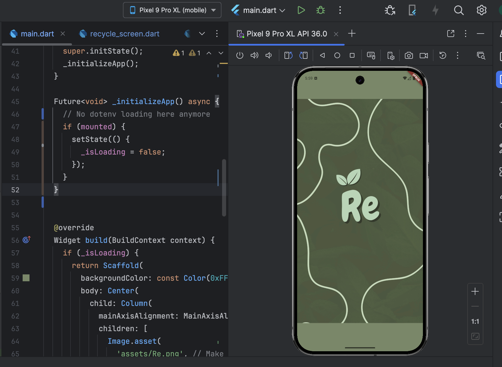
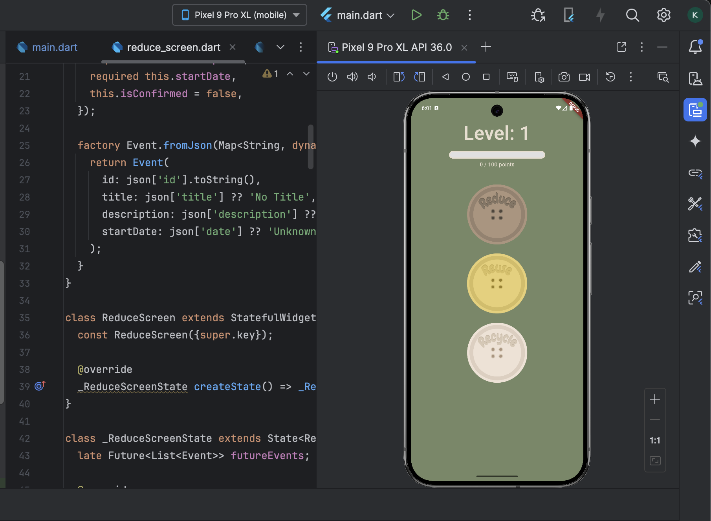
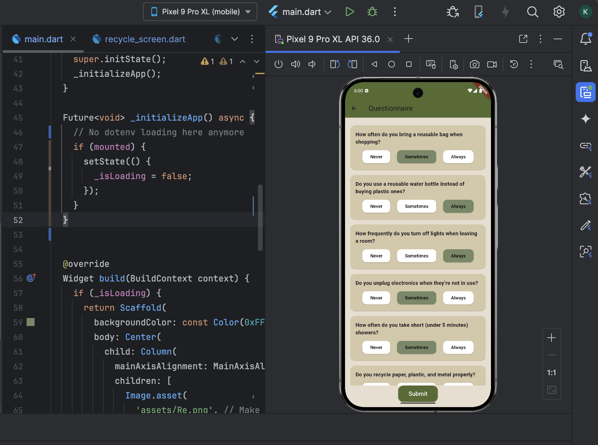
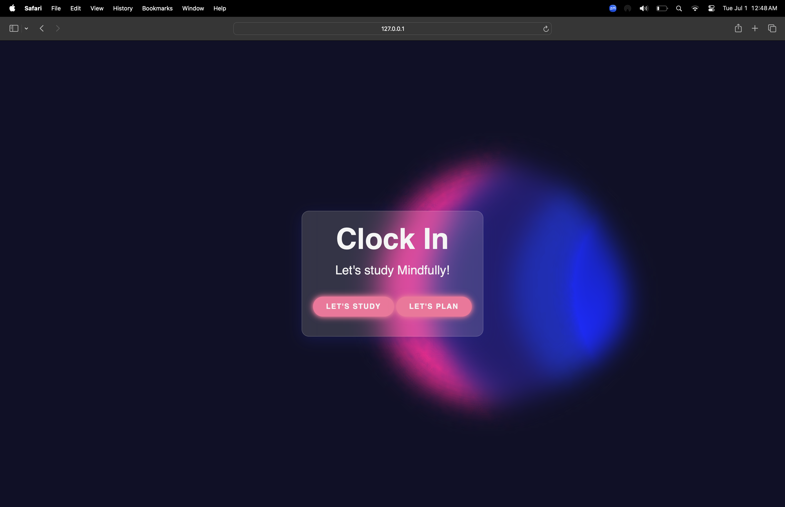
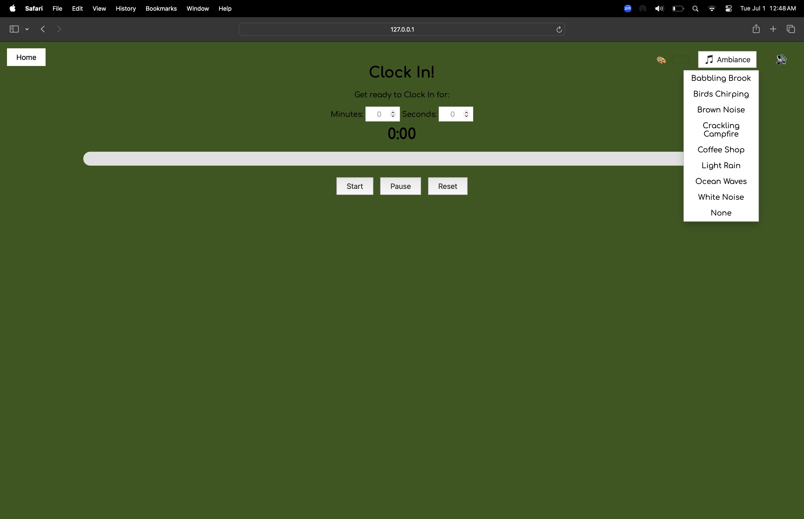
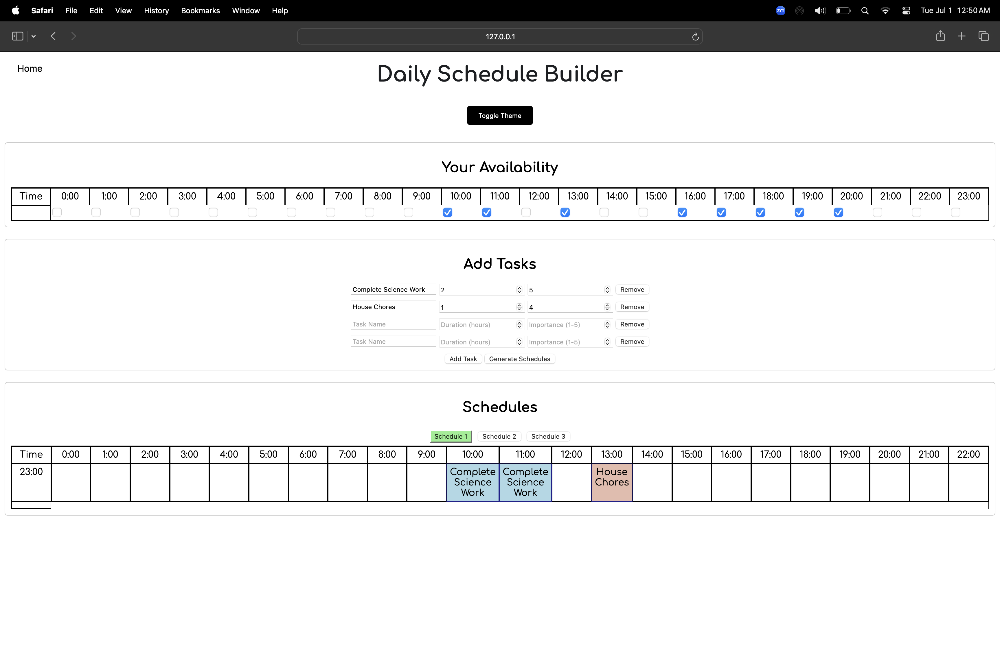

My Hackathon Projects 🖥
-
Re: Sustainability Education App
"Re" is a web application that tries to tackle the issue of misinformation around recyclables by gamifying the experience! Developed with a team of fellow Computer Science students at the Boston University Civic Hacks Hackathon, I created all of the apps assets and helped design the UI of the application. This project was the first time I had ever contributed to the development of a web-application, but I learned a lot of skills from my teammates that I would bring with me into future endeavors.
View on GitHubClick below to view some screenshots of "Re" in action!
   -
Clock In: A Study Website for Students by Students
"Clock In", is a website meant to help students with low self-efficacy in the realm of productivity not only get started but also remain focused in completing tasks. Built for the Simmons University Shark Hacks Hackathon 2025, I created the skeleton for the website, made the ascending timer feature, and also debugged pathing issues within the project. In the future, I plan to continue adding features and cleaning up the files of the project.
View on GitHubClick below to view some screenshots of "Clock In" in action!
  